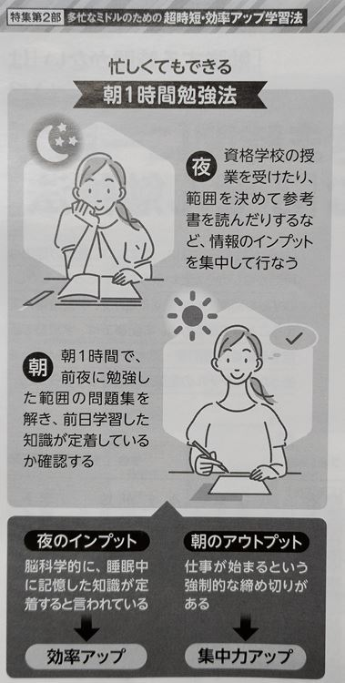
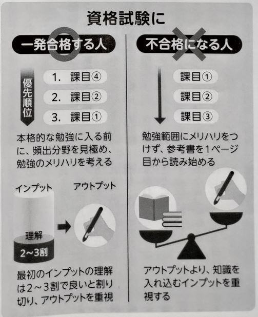

[筆記] 雜誌 THE21 2022年7月号 40代・50代で必ずやっておくべき「学び直し」
Contents
偶然的機會在圖書館看到這本書日本雜誌
我的N4能力竟然可以讀懂做這想要表達的理念
我挑選其中準備測驗的技巧的部分
時間規劃
- 晚上輸入：睡覺期間可以幫助記憶思考
- 早上輸出：有上班時間壓力可以更加專注 
文中有專欄提到，可以在晚上睡前吸收知識，早上起床後上班前執行輸出，這樣一來可以讓大腦在睡眠狀態下，持續為我們增強記憶。我自己是還沒有體驗過這樣的做法，因為我早上不一定能提前起床，通常起床後就是準備出門。但我以前考N4的時候，大部分都是利用睡前與與起床後的短暫時間，背單字，雖然每次可能不超過三個，但積少成多，最後就記住不少。
不用學到全部都懂，部分理解就可以開始輸出
不要買完參考書後從第一頁開始讀，要挑出現頻率高的學習。 
這個在我N4學習的歷程，也不太符合。我當時是買GOGOGO 4冊，從第一頁開始學習，但遇到太難的會跳過，畢竟有些用法很少見，日檢也不會考到那麼細，但我覺得在從無到有的基礎建立的過程中，還是有必要從第一課開始學習。
連結
THE21 2022年7月号 40代・50代で必ずやっておくべき「学び直し」